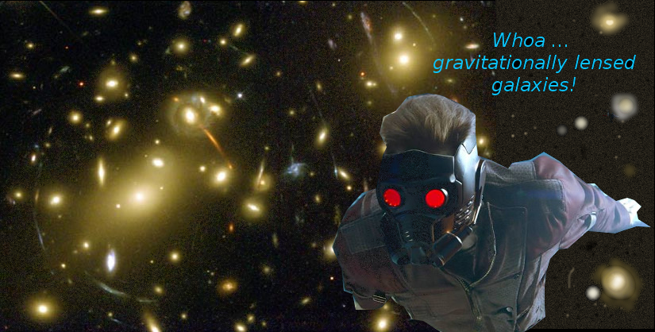

| Department: Physics and Astronomy Class time and place: MWF,9:00-9:50 am, Me 113 Section: 1 (CRN=30769) Instructor: Dr. Jason Pinkney Office hours: in 111 Science Annex on Tue at 10 am and 2-4 pm, on Thu at 9-11 am. E-mail j-pinkney@onu.edu or call 419-772-2740. Instructor's Home page: https://jpastro.net Credit hours: 3 Observatory Phone: 772-4028 |

|
Pumba, Timon, and Simba wondering about the universe
This is a link about solving word problems.
Astronomy Picture
of the Day (APOD)
SkyMaps.pdf Color version of all 4 constellation sheets.
Interactive scale of the universe.
Week 1-2 outline (PDF) Powers of 10 and some Ch 1 material.
Powers of 10 (9 minute video shown in class)
RQ Review questions for 1st quiz.
Key to Powers of 10 worksheet
Week 2-3 outline on Celestial Sphere (PDF). (ORIGINAL)
Week 2-3 outline on Celestial Sphere (PDF). REVISED for Fri 2/17 class.
Answers to 1st homework.
RQ Review questions for 2nd quiz.
YouTube: Precession Shows most phenomena related to precession but
gives no cause.
Shows ecliptic (the white curve) as you should draw it on the Cel. Sphere Worksheet.
YouTube: Precession and seasons Dr. Becky gives a good explanation of
precession as well as seasons and calendars.
Copernican Revolution outline (week 5).
RQ: Review questions for 3rd quiz.
Answers to Celestial Sphere worksheet.
Answers to 2nd homework on Ch 1.
Answers to Moodle Quiz 3.
Cosmos Episode 3 - Harmony of the Worlds
Dubunks Astrology (3:15), Anasazi and Fajada Butte (15:50), Kepler's regular solids (32:00), Tycho and Kepler working together (37:45), and Kepler's laws (46:00).
RQ: Review Questions for Exam I.
Answers to Ch. 2 homework.
Light (Ch. 3) notes. (PDF)
Spectroscopy (Ch. 4) notes. (PDF)
YouTube: The Doppler Effect
RQ: Review questions Ch 3+4 Quiz.
Answers to Ch. 3-4 homework
The Sun (Ch. 16) PDF Updated with better slides 3/27/22.
RQ: Review questions on Ch 16 (The Sun).
YouTube Video "Sun by SOHO satellite". The old "SOHO Montage" was taken down, but here's a 25th anniversary of SOHO with narration.
YouTube Video: demonstration of resonances (Chladni plates). Notice the similarity between these 2D resonances and the vibrations on the Sun's surface studied by GONG.
The Sun in Ultra-HD (4K) Beautiful hi-def. Just sample some of this 30-minute video.
Answers to Ch. 16 homework
Stellar Properties. (Ch. 17) PDF version of PowerPoint. (Updated 4/20/23)
RQ: Review Questions on Stel. Prop.s
Stellar Evolution. (PDF)
RQ:
Review Questions on Stellar Evolution for Exam 2
Answers to Ch. 18-20 homework
Distance Scale (Ch.23) (PDF)
RQ: Review Questions for Ch. 23 Don't need to know #2 and 5.
Distance Scale (Ch.24) (PDF)
Cosmology outline (Ch.26) (PDF)
RQ: Review Questions for Final Exam. Ch. 23,24,26 material.
My Answers to Ch. 23 homework (txt file)
--------------------------------------------------------------------------
Text:
Astronomy Today, 9/E (9th Edition) by Chaisson and McMillan.
This 2017 edition has a "rent-only" ISBN-13 of 978-0134450278. This is what we
have in the bookstore. Do NOT buy the Volume 1 or 2 versions
("The Solar System" and "Stars and Galaxies"). Cost of rental should
be about $76. I don't require you to bring the text to class.
Course Description:
Stars and Galaxies
is an introductory astronomy course. You will learn about the
nature of stars, galaxies and the universe. The details of our solar system
are left to PHYS 1051. We will begin with a survey of the
naked-eye universe (mostly nearby objects) and end with cosmology
(the distant universe). In-between we will discuss such topics
as the electromagnetic spectrum, the sunspot cycle, how stars are born
and die, and galaxies. A recurrent theme will be distances and
the distance ladder , a battery of techniques that take us
from the Earth all the way out to the most distant galaxies.
A tentative calendar of topics is outlined below.
Physics 1061 fulfills a general education learning outcome
called 'knowledge of the physical/natural world'.
Course Objectives:
By the end of this course, students will:
Lab:
The lab for this class, PHYS 1091 (1 hr), is designed for
astronomy minors and physics majors with an astronomy core
It is not required of PHYS 1061 students.
You'll need my approval to enroll in the lab.
If you are enrolled, expect an e-mail from me this week about
choosing the meeting time.
Astronomy Minor:
You might consider being an
astronomy minor
if a good
familiarity with astronomy would complement your current major.
Consider entering an exciting field like astrobiology,
astrochemistry, archeoastronomy, cosmochemistry, science education,
science illustration, or science journalism.
Observatory:
Your visits to the
ONU
Observatory will weigh into the
"Observing" portion of your grade (see below).
You should try to visit at least 3 times for 100%.
There is a legal pad in the control room that you must sign for credit.
I plan to be at the observatory for 1 hour on Friday nights (if < 50%
cloudcover) so that I can help you fulfill your observing duties.
Another time to visit is during meetings of the ONU Astronomy Club every
other Wednesday night at 9 pm.
Still another time is during "Public Events" which
are held on Friday nights for two hours.
When you visit, bring along your Constellation Sheets
and observing forms (see below),
and try to get some views through our telescopes and binoculars.
It is best if you label your constellation sheets
before going out to the observatory.
I can able to help you with your sheets and forms, although
my attention may be divided.
You can bring a friend or two (not necessarily signed
up in the class) for the long, dark walk to and from the Observatory.
Grading:
| Observing | Observing Forms, 3+ visits to Observatory |
5% |
| In-class | Homework, in-class activities, participation | 20% |
| Quizzes | Quizzes (drop lowest grade) | 25% |
| Exams | There will be two exams and a final. | 50% |
| Total | 100% |
|
<55
|
55-70
|
70-80
|
80-90
|
90-100
|
|
|
|
|
|
|
I will not grade any "harder" than the above. However, if the class mean drops below 75, I will grade more leniently.
| Week of | Topic | Chapter(s) | Tests |
| 1/23,25,27 |
Syllabus. Powers of 10 Cosmology. | 1 | Pre-course Survey |
| 1/30,2/1,3 |
Naked Eye Universe, Celestial Sphere | 1 | |
| 2/6,8,10* |
Celestial Sphere: coordinates, seasons |
1 | quiz 1 |
| 2/13,15,17 |
Time, precession, parallax. History |
1,2 | quiz 2 |
| 2/20,22,24 |
History: Geocentric vs Heliocentric solar system |
2 | quiz 3 |
| 2/27,3/1,3 |
History: Kepler, Newton, the A.U. |
2 | Exam I |
| 3/6,8,10 |
Light & Spectroscopy | 3, 4 | |
| 3/13-17 |
Spring Break |
|
|
| 3/20,22,24 |
The Sun - Observatory visit |
16 |
quiz 4 |
| 3/27,29,31 |
Stellar Properties |
17 |
|
| 4/3,5 |
ISM,Star formation |
18,19 |
quiz 5 |
| 4/7 |
Good Friday | - | - |
| 4/10,12,14* |
Stellar Evol. - low-mass stars like Sun |
20 |
|
| 4/17,19,21 |
Stellar Evol. - High mass, supernovae |
20,21 |
Exam II |
| 4/24,26,28 |
The Milky Way Galaxy |
23 |
quiz 6 |
| 5/1,3,5 |
Galaxies / The Distance Ladder |
24 |
quiz 7 |
| 5/8,10,12 |
Cosmology.
|
26 |
Turn in constel. shts. |
| 5/19 Friday |
Comprehensive Final Exam on Friday 5/19, 9:15-11:15 am. |
_ | Final exam. |
| * Feb 10 is last drop, Apr 14 is last W, 4/18 (Tues) is Honor's Day | |||
Other Course Policies
Moodle will be used minimally for this course. This web page is my LMS! I may use Moodle to post your grades by importing them from my spreadsheet. I may also give a quiz on Moodle if we need to do remote learning or classes get cancelled.| Disability services | Academic Honesty (Append. F, p. 97) | Title IX |
| Cool Astro Links | Pinkney's Homepage | The ONU Physics Homepage | Hyperphysics |
{kind=link}